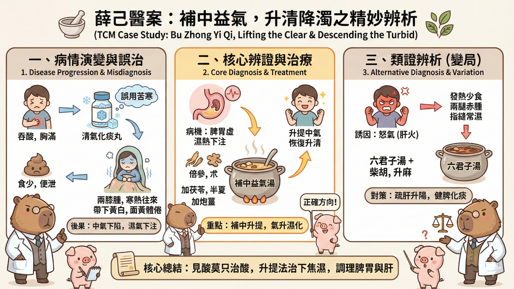
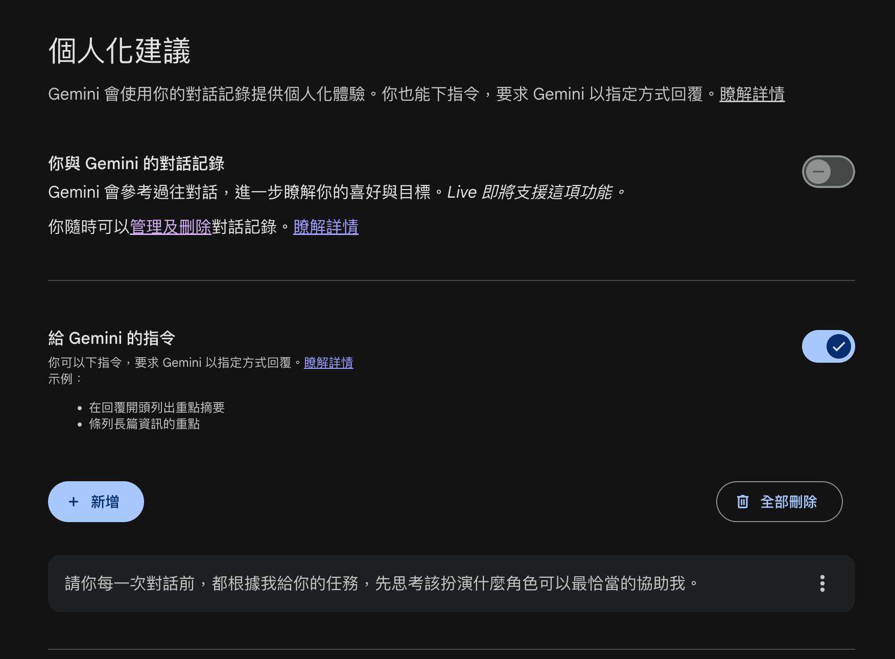

1 Module 1 — 古今醫案按的圖解步驟
1.1 演練案例：脾胃虛濕熱下注型帶下
一婦人吞酸胸滿。食少便泄。月經不調。服清氣化痰丸。兩膝漸腫。寒熱往來。帶下黃白。面黃體倦。此脾胃虛濕熱下注。
用補中益氣倍參、朮。加茯苓、半夏、炮姜而愈。
若因怒。發熱少食。或兩腿赤腫。或指縫常濕。用六君加柴胡、升麻。及補中益氣。

1.2 操作順序
1.2.1 步驟 1：將原文放進 Gemini 進行理解
提示小技巧 1：大括弧限定文件範圍
{ 文件資料 }用大括弧可以降低 LLM 在前後文的理解辨識錯誤，讓模型知道文件的範圍。
提示小技巧 2：調整 System Prompt
請你每一次對話前，都根據我給你的任務，
先思考該扮演什麼角色可以最恰當的協助我。設定範例：
## 角色設定
在回應前，判斷最適合的專業角色（工程師、設計師、
策略顧問、教師、編輯等），並在開頭標注：
**[角色]**：
## 回應原則
- 直接切入重點，不重複使用者說過的話
- 有多種做法時，給出明確建議而非列出所有選項
- 不確定時說不確定，不要編造
## 反思
完成任務後，附上一段簡短反思：
`★ Insight ────────────────────────────────`
[針對這次任務，2-3 個值得注意的觀點或取捨]
`──────────────────────────────────────────`
1.2.2 步驟 2：給予意向性
Human intention in, meaningful context out.
你想要語言模型從什麼樣的層面理解？就必須加入你希望他切入的觀點。
Prompt 範例：
{ 脾胃虛濕熱下注型帶下
一婦人吞酸胸滿。食少便泄。月經不調。服清氣化痰丸。
兩膝漸腫。寒熱往來。帶下黃白。面黃體倦。此脾胃虛濕熱下注。
用補中益氣倍參、朮。加茯苓、半夏、炮姜而愈。
若因怒。發熱少食。或兩腿赤腫。或指縫常濕。
用六君加柴胡、升麻。及補中益氣。
}
請你以臨床實用診斷觀點，拆解三個重點1.2.3 產出範例
針對這段中醫古籍醫案，以「臨床實用診斷」的角度拆解，這不僅僅是一個「白帶（帶下）」的案例，更是一場關於「虛實辨證」與「升降氣機」的深度博弈。
1.2.3.1 重點一：誤治的代價——辨清「真熱」與「中焦虛寒」
醫案開頭提到的「吞酸胸滿、便泄」，初看似乎有痰熱或食積，原醫者用了「清氣化痰丸」。這在臨床上是極大的陷阱。
- 診斷陷阱： 吞酸不一定是火，也可能是脾胃虛寒導致的「中陽不振」。清氣化痰丸藥性苦寒，對於「食少便泄」的脾虛患者來說，無異於雪上加霜。
- 臨床反饋： 服藥後「兩膝漸腫、寒熱往來」，代表苦寒藥傷了脾陽，導致濕邪不化，反而下注關節。
- 關鍵點： 臨床見到熱象（黃帶、吞酸），必須先確認脾胃的「運化能力」。 若有便泄、體倦，應「守中」而非「攻邪」。
1.2.3.2 重點二：核心機制——「升清則下流自止」
| 藥物 | 用意 |
|---|---|
| 倍參、朮 | 極力恢復中焦的「泵」功能，把氣提起來 |
| 炮薑 | 溫性化散下焦的寒濕，守住中陽，防止參、朮過於滋膩 |
| 茯苓、半夏 | 化濕和胃降逆 |
關鍵點： 治療下焦濕熱，不一定要用利尿苦寒藥；透過「升提中氣」讓水液各歸其位，才是治本。
1.2.3.3 重點三：變證診斷——情緒與經絡的「延伸連鎖」
| 觸發因素 | 臨床表現 | 診斷思路 | 建議方案 |
|---|---|---|---|
| 情志（怒） | 發熱、兩腿赤腫 | 肝木克脾土，肝經濕熱下滲 | 補中益氣 + 舒肝（柴胡、升麻） |
| 濕氣偏盛 | 指縫常濕 | 脾主四肢，濕邪透過經絡末梢外溢 | 加強燥濕健脾（六君子湯） |
1.2.4 步驟 3：進行 Infographic 化
{ 內容 }
請你將這段內容進行 infographic 圖解，專業可愛風格，
以水豚君教授小白豬助理為輔助
注记Prompt 說明
- 風格會決定整張圖解的整體樣式，如果要讓整個風格統一，必須在指令時就要建立
- 如果要固定某些角色在圖解內，就要加入 Prompt
- 圖片是預覽，要完整的圖片解析度，要下載
練習步驟：
- 先以剛剛的對話窗，直接輸入
- 開新的對話窗，重新輸入內容，比較差異
1.2.5 範例展示